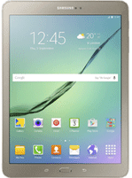
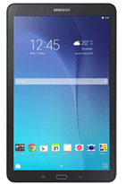

centric
centric
SAMSUNG KNOX
With KNOX, Samsung’s defense-grade mobile security
platform for Android, Samsung devices are secure
from the moment they are powered on.
We work with governments around the world to ensure
that our security platform is up to the latest standards.
KNOX Customization
Samsung places customer needs at the center
of our innovation process.
Our relentless innovation and
manufacturing flexibility put us in a unique
position to rapidly deliver
customized enterprise solutions.
SEAP
Samsung’s open platform allows us
to partner with leading and emerging
solutions providers to offer more
choices for professionals, executives,
and industry leaders,
creating a robust ecosystem.
SAMSUNG KNOX
Samsung KNOX is a defense-grade mobile security
platform built into Samsung devices, providing
multi-layer protection from the moment
you turn on your device.
Government-certified Security
Today, KNOX meets the requirements of national governments across the world
and is continually being developed in partnership with these governments
to meet the evolving security standards of the marketplace.
Right out of the box, Samsung KNOX protects hardware, software,
and application components with enhanced, built-in defense-grade security.
- FIPS 140-2
USA
FIPS 140-2
Certification - STIG Compliance
USA
STIG Compliance
by DISA - NA CSFC
USA
NA CSFC - CESG
UK
CESG
Security Guidance - FINLAND
FINLAND
FICORA
Certification - AUSTRALIA
AUSTRALIA
ASD
Cerification - Multi-national
Multi-national
Common Crifteria
W/MDFPP
in 26 Countries
KNOX CUSTOMIZATION
Samsung KNOX Customization transforms standard
Samsung devices into purpose-built appliances, enabling
customized experiences and functional usability for all industries
in the B2B market.
KNOX is tailored to your business needs, enabling you to:
- Consulting
Consulting
Services - SDK & Custom
SDK & Custom
Binary - Deployment
Deployment
Support - Device Security
Device
Security - Industry Solutions
Industry Solutions
- Technical Support
Technical Support
SEAP
(Samsung Enterprise Alliance Program)
SEAP is an ecosystem for developers and partners, providing tools and resources to help build and distribute the highest quality solutions on Samsung mobile devices. SEAP strives to support partners in successfully developing and commercializing their solutions, so as to unlock new revenue opportunities.
see moreSEAP offers the following differentiated benefits to partners:
- Technical Support
Technical Support
- Sales
Sales /
Marketing Support - Device Loaning
Device Loaning
- Online Training
Online Training
- Developer Forum
Developer Forum /
Technical Blog
SAMSUNG PAY
SAMSUNG PAY
Samsung Pay is simple, secure, and virtually universal. Using our innovative new technology,
MST, Samsung Pay allows you to use your Samsung phone to pay anywhere
that accepts a credit card, debit card or traditional NFC technology. Protecting your purchases
through fingerprint authentication and tokenization encryption, Samsung Pay delivers
a best-in-class mobile payment solution.
Benefits of samsung pay
- Simple
Simple
- Secure
Secure
- Everywhere
Everywhere
CONNECTED CAR
Connected Car supports automakers as they redefine the future of the automobile, bringing
improvements in safety, maintenance, control, and entertainment. The result is an enhanced,
secure experience for consumers and automotive companies alike,
changing the way we all view the automotive industry.
- Driver Behavior
Driver Behavior
Analysis - Crash Detection
Crash Detection
- Mobile Hotspot
Mobile Hotspot
& Log-in Service - Reduce Data
Reduce Data
Transfer - Alerts
Alerts &
Notifications - Engine
Engine &
Car Diagnostics - Authentication
Authentication
with BLE - Data Analysis
Data Analysis
Using SaaS
HIGHLIGHTED PRODUCTS
-

Tab S2 (9.7”)
-
Tab S2 (8.0”)
-

Tab E (9.6”)
-
EB48D(48")
RELATED INSIGHTS
-
WhitePaper
Samsung School 2.0 Taps
thsCloud to Enhance its...
Lowers Cost, EmbracesParents,
Download PDF
Adminstrators via The Cloud -
Infographic
Extend learning ing K-12
classrooms and beyond
Samsung School v2.0 transforms K-12
Download PDF
classrooms, helping schools create
connected learning environments that... -
Brochure
Enhanced classroom
technology takes to the...
This easy-to-use, integrated solution
Download PDF
combines hardware, software and
communications to deliver a variety of...